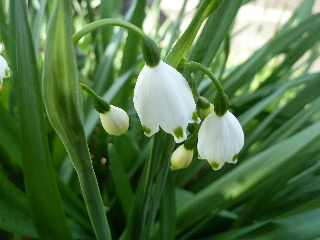
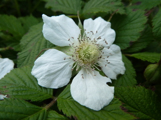
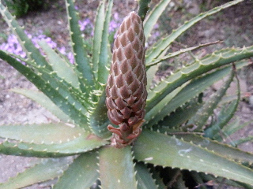
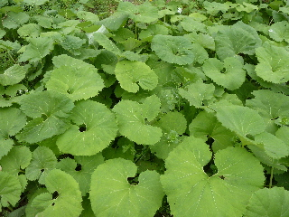
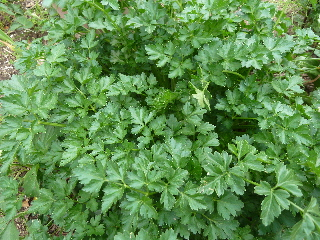
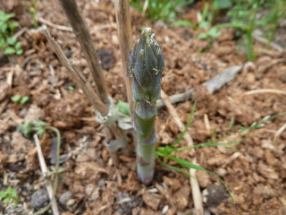

遊びで植物を育てよう
2014/04/06
色んな花が咲いています。
畑や庭の色んなところで花が咲いています。

これはスズラン？と思って調べてみるとスズランスイセンでした。
自分で植えていないものは、何？って思う事がよくあります。
気になったものは調べて、名前くらいは分かるようになりたいです。

クサイチゴの花も咲きました。
もうちょっとしたらクサイチゴが食べれますね。
苺の花を見ると、暖かい季節になったんだなーと実感します。
【4月TOP】
【日記TOP】
【園芸TOP】
2014/04/12
アロエから蕾が出て来ました。
アロエの真ん中から、アスパラみたいなのが出て来ました。

もうちょっとしたら花が咲くのかな。
楽しみです。
【4月TOP】
【日記TOP】
【園芸TOP】
2014/04/19
野菜が茂りだしました。
ふきがいっぱい出ましたね。

あんまり好きじゃないですけど、食べないのももったいないので収穫しました。
沢山食べますよ。

イタリアンパセリもいっぱい出来ました。
こっちも一杯食べなきゃ。
両方クセのある味なので、料理方法を考えないといけないですね。
ネットで検索します。
【4月TOP】
【日記TOP】
【園芸TOP】
2014/04/19
アスパラが出て来ました。
土から何か出てくると、春ですねーって感じますね。

ちょっと固そうなアスパラが出て来ました。
次に柔らかそうなのが出たら収獲しよう。
【4月TOP】
【日記TOP】
【園芸TOP】
過去の日記
【2024年4月の日記】
【2023年4月の日記】
【2022年4月の日記】
【2021年4月の日記】
【2020年4月の日記】
【2019年4月の日記】
【2018年4月の日記】
【2017年4月の日記】
【2016年4月の日記】
【2015年4月の日記】
【2014年4月の日記】
【2013年4月の日記】
【4月TOP】
【日記TOP】
【園芸TOP】
畑仕事じゃないよ。
【おいしいものを食べよう。】【しっかり寝よう。】
【ソロ活をしよう!】【季節感のあることをしよう。】【動画視聴はほどほどに。】【当サイトの全てのコンテンツは無断転載禁止です。】